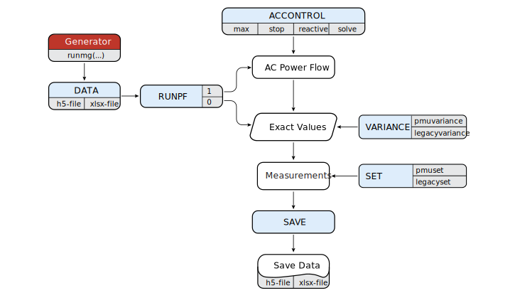

Measurement Generator
The function uses the AC power flow analysis or predefined user data to generate measurements. The standalone measurement generator produces measurement data in a form suitable for the state estimation function.
Run Settings
The standalone measurement generator receives inputs for measurement variances, and inputs for measurement sets, to produce measurement data. There are two export formats supported for the measurement data, .h5 or .xlsx file. The settings are provided as input arguments of the function runmg(...).
The order of inputs and their appearance is arbitrary, with only DATA input required. Still, for the methodological reasons, the syntax examples follow a certain order.
Syntax
runmg(DATA)
runmg(DATA; RUNPF)
runmg(DATA; RUNPF, SET)
runmg(DATA; RUNPF, SET, VARIANCE)
runmg(DATA; RUNPF, SET, VARIANCE, ACCONTROL)
runmg(DATA; RUNPF, SET, VARIANCE, ACCONTROL, SAVE)Description
runmg(DATA) computes the AC power flow problem and generates measurements
runmg(DATA; RUNPF) sets AC power flow analysis
runmg(DATA; RUNPF, SET) defines the measurement set (in-service and out-service)
runmg(DATA; RUNPF, SET, VARIANCE) defines measurement values using predefined variances
runmg(DATA; RUNPF, SET, VARIANCE, ACCONTROL) sets variables for the AC power flow
runmg(DATA; RUNPF, SET, VARIANCE, ACCONTROL, SAVE) exports measurements and power system dataOutput
results = runmg(...) returns measurement and power system data with a summaryExamples
julia> results = runmg("case14.xlsx"; pmuset = "optimal")julia> results = runmg("case14.xlsx"; pmuset = ["Iij" 5 "Vi" 2])julia> results = runmg("case14.xlsx"; pmuset = ["Iij" "all" "Vi" 2], legacyset = ["Pij" 4 "Qi" 8])julia> results = runmg("case14.h5"; legacyset = ["redundancy" 3.1], legacyvariance = ["all" 1e-4])julia> results = runmg("case14.h5"; legacyset = "all", legacyvariance = ["Pij" 1e-4 "all" 1e-5])Input Arguments
The measurement generator function runmg(...) receives the variable number of argument DATA, and group of arguments by keyword: RUNPF, SET, VARIANCE, ACCONTROL and SAVE.
Variable Arguments
DATA
| Example | Description |
|---|---|
"case14.h5" | loads the power system data from the package |
"case14.xlsx" | loads the power system data from the package |
"C:/case14.xlsx" | loads the power system data from a custom path |
Keyword Arguments
RUNPF
| Command | Description |
|---|---|
runpf = 1 | forces the AC power flow analysis to generate measurements, default setting |
runpf = 0 | generates measurements directly from the input DATA |
SET (phasor measurements)
| Command | Description |
|---|---|
pmuset = "all" | all phasor measurements are in-service |
pmuset = "optimal" | deploys phasor measurements according to the optimal PMU location using GLPK solver, where the system is completely observable only by phasor measurements |
pmuset = ["redundancy" value] | deploys random angle and magnitude measurements measured by PMUs according to the corresponding redundancy |
pmuset = ["device" value] | deploys voltage and current phasor measurements according to the random selection of PMUs placed on buses, to deploy all devices use "all" as value |
pmuset = ["Iij" value "Dij" value "Vi" value "Ti" value] | deploys phasor measurements according to the random selection of measurement types[1], to deploy all selected measurements use "all" as value |
SET (legacy measurements)
| Command | Description |
|---|---|
legacyset = "all" | all legacy measurements are in-service |
legacyset = ["redundancy " value] | deploys random selection of legacy measurements according the corresponding redundancy |
legacyset = ["Pij" value "Qij" value "Iij" value "Pi" value "Qi" value "Vi" value] | deploys legacy measurements according to the random selection of measurement types[2], to deploy all selected measurements use "all" as value |
If runpf = 0, the function keeps sets as in the input DATA and changes only the sets that are called using keywords. For example, if the keywords pmuset and legacyset are omitted, the function will retain the measurement set as in the input data, which allows the same measurement set, while changing the measurement variances.
If runpf = 1, the function starts with all the measurement sets marked as out-service.
Further, the function accept any subset of phasor[1] or legacy[2] measurements, and consequently, it is not necessary to define attributes for all measurements.
julia> runmg("case14.h5"; pmuset = ["Iij" "all" "Vi" 2])Thus, the measurement set will consist of two randomly selected bus voltage magnitude measurements, and all branch current magnitude measurements, both of them related with PMUs.
VARIANCE (phasor measurements)
| Command | Description |
|---|---|
pmuvariance = ["all" value] | applies fixed-value variance over all phasor measurements |
pmuvariance = ["random" min max] | selects variances uniformly at random within limits, applied over all phasor measurements |
pmuvariance = ["Iij" value "Dij" value "Vi" value "Ti" value "all" value] | predefines variances over a given subset of phasor measurements[1]; to apply fixed-value variance over all, except for those individually defined use "all" value |
VARIANCE (legacy measurements)
| Command | Description |
|---|---|
legacyvariance = ["all" value] | applies fixed-value variance over all phasor measurements |
legacyvariance = ["random" min max] | selects variances uniformly at random within limits, applied over all phasor measurements |
legacyvariance = ["Pij" value "Qij" value "Iij" value "Pi" value "Qi" value "Vi" value "all" value] | predefines variances over a given subset of phasor measurements[2], to apply fixed-value variance over all, except for those individually defined use "all" value |
If runpf = 0, the function keeps measurement values and measurement variances as in the input DATA, and changes only measurement values and variances that are called using keywords. For example, if the keywords pmuvariance and legacyvariance are omitted, the function will retain the measurement values and variances as in the input data, allowing the same measurement values and variances, while changing the measurement sets.
If runpf = 1, the function starts with zero variances, meaning that measurement values are equal to the exact values.
Further, the function accepts any subset of phasor[1] or legacy[2] measurements, consequently, it is not necessary to define attributes for all measurements, where keyword "all" generates measurement values according to defined variance for all measurements, except for those individually defined.
julia> runmg("case14.h5"; legacyvariance = ["Pij" 1e-4 "all" 1e-5])The function applies variance value of 1e-5 over all legacy measurements, except for active power flow measurements which have variance equal to 1e-4.
ACCONTROL
| Command | Description |
|---|---|
max = value | specifies the maximum number of iterations for the AC power flow, default setting: 100 |
stop = value | specifies the stopping criteria for the AC power flow, default setting: 1.0e-8 |
reactive = 1 | forces reactive power constraints, default setting: 0 |
solve = "mldivide" | mldivide linear system solver, default setting |
solve = "lu" | LU linear system solver |
SAVE
| Command | Description |
|---|---|
save = "path/name.h5" | saves results in the h5-file |
save = "path/name.xlsx" | saves results in the xlsx-file |
Data Structure
The function supports the .h5 or .xlsx file extensions, with variables pmuVoltage and pmuCurrents associated with phasor measurements, and legacyFlow, "legacyCurrent", "legacyInjection" and "legacyVoltage" associated with legacy measurements. Further, the function requires knowledge about a power system using variables bus, branch, generator and "basePower" variables.
The minimum amount of information within an instance of the data structure required to run the module requires one variable associated with measurements if runflow = 0, and bus and branch variables.
Next, we describe the structure of measurement variables involved in the input/output file, while variables associated with a power system are described in Power Flow section.
The pmuVoltage data structure
| Column | Description | Type | Unit |
|---|---|---|---|
| 1 | bus number | positive integer | |
| 2 | measurement | bus voltage magnitude | per-unit |
| 3 | variance | bus voltage magnitude | per-unit |
| 4 | status | bus voltage magnitude in/out-service | |
| 5 | measurement | bus voltage angle | radian |
| 6 | variance | bus voltage angle | radian |
| 7 | status | bus voltage angle in/out-service | |
| 8 | exact | bus voltage magnitude | per-unit |
| 9 | exact | bus voltage angle | radian |
| 10 | label | optional column |
The pmuCurrent data structure
| Column | Description | Type | Unit |
|---|---|---|---|
| 1 | branch number | positive integer | |
| 2 | from bus number | positive integer | |
| 3 | to bus number | positive integer | |
| 4 | measurement | branch current magnitude | per-unit |
| 5 | variance | branch current magnitude | per-unit |
| 6 | status | branch current magnitude in/out-service | |
| 7 | measurement | branch current angle | radian |
| 8 | variance | branch current angle | radian |
| 9 | status | branch current in/out-service | |
| 10 | exact | branch current magnitude | per-unit |
| 11 | exact | branch current angle | radian |
| 12 | label | optional column |
The optional column label is useful to use when several PMUs exist on a single bus, where labels used in the variable pmuCurrent should be consistent with labels in the variable pmuVoltage.
The legacyFlow data structure
| Column | Description | Type | Unit |
|---|---|---|---|
| 1 | branch number | positive integer | |
| 2 | from bus number | positive integer | |
| 3 | to bus number | positive integer | |
| 4 | measurement | active power flow | per-unit |
| 5 | variance | active power flow | per-unit |
| 6 | status | active power flow in/out-service | |
| 7 | measurement | reactive power flow | per-unit |
| 8 | variance | reactive power flow | per-unit |
| 9 | status | reactive power flow in/out-service | |
| 10 | exact | active power flow | per-unit |
| 11 | exact | reactive power flow | per-unit |
The legacyCurrent data structure
| Column | Description | Type | Unit |
|---|---|---|---|
| 1 | branch number | positive integer | |
| 2 | from bus number | positive integer | |
| 3 | to bus number | positive integer | |
| 4 | measurement | branch current magnitude | per-unit |
| 5 | variance | branch current magnitude | per-unit |
| 6 | status | branch current magnitude in/out-service | |
| 7 | exact | branch current magnitude | per-unit |
The legacyInjection data structure
| Column | Description | Type | Unit |
|---|---|---|---|
| 1 | bus number | positive integer | |
| 2 | measurement | active power injection | per-unit |
| 3 | variance | active power injection | per-unit |
| 4 | status | active power injection in/out-service | |
| 5 | measurement | reactive power injection | per-unit |
| 6 | variance | reactive power injection | per-unit |
| 7 | status | reactive power injection in/out-service | |
| 8 | exact | active power injection | per-unit |
| 9 | exact | reactive power injection | per-unit |
The pmuVoltage data structure
| Column | Description | Type | Unit |
|---|---|---|---|
| 1 | bus number | positive integer | |
| 2 | measurement | bus voltage magnitude | per-unit |
| 3 | variance | bus voltage magnitude | per-unit |
| 4 | status | bus voltage magnitude in/out-service | |
| 5 | exact | bus voltage magnitude | per-unit |
The input data needs not to contain a complete structure of measurement variables, and measurement data needs not to be consistent with the total number of buses and branches. Also, the function supports more than one measurement per the same bus or branch.
Flowchart
The measurement generator flowchart depicts the algorithm process according to user settings.

- 1Complete phasor measurement set contains branch current magnitude Iij, branch current angle Dij, bus voltage magnitude Vi and bus voltage angle Ti measurements.
- 2Complete legacy measurement set contains active power flow Pij, reactive power flow Qij, branch current magnitude Iij, active power injection Pi, reactive power injection Qi and bus voltage magnitude Vi measurements.